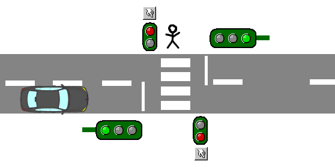

Приложение А. Язык спецификаций Event-B
Данное приложение содержит краткое введение в Event-B. Оно адресовано тем читателям, которые не знакомы с данной нотацией и с методами строгого доказательства корректности формальных спецификаций.
Event-B — это формальный метод, предназначенный для специфицирования сложных систем. Event-B является дальнейшим развитием метода B. Он обладает более простой нотацией, которую легче изучать и использовать. Некоторые языковые конструкции B, как, например, поддержка транзитивного замыкания, были удалены. Данные изменения сделаны с целью упрощения процесса разработки и доказательства спецификаций, а также для защиты разработчика-верификатора от излишних деталей. Кроме этого, также претерпела изменения структура спецификаций.
А.1. Математическая нотация
Математическая нотация Event-B основана на теории множеств и логики первого порядка. В расположенных далее таблицах описаны основные конструкции языка. Их следует использовать в качестве справочной информации при изучении текста спецификации базового уровня МРОСЛ ДП-модели. Данное описание не является полным, оно затрагивает только те конструкции, которые были использованы при разработке спецификации МРОСЛ ДП-модели. Полную версию, послужившую источником информации для данного раздела, можно найти на сайте Event-B [108].
Таблица В.1
Числа
| Множество целых чисел | \mathbb{Z} |
| Множество натуральных чисел | \mathbb{N} |
| Множество положительных натуральных чисел | \mathbb{N}_1 = \mathbb{N} \setminus \{0\} |
| Сумма | m + n (Здесь и далее m и n это числа) |
| Разность | m - n |
| Произведение | m * n |
| Частное | m / n |
| Остаток | m \bmod n |
| Интервал | m..n = \{i \mid m \leqslant i \land i \leqslant n\} (Множество таких i, что m меньше или равно i и i меньше или равно n) |
Таблица В.2
Предикаты над числами
| Больше | m > n |
| Меньше | m < n |
| Больше или равно | m \geqslant n |
| Меньше или равно | m \leqslant n |
Таблица В.3
Предикаты
| Ложь, false | FALSE |
| Истина, true | TRUE |
| Множество BOOL | BOOL = \{FALSE, TRUE\} |
| Конъюнкция | P \land Q (Здесь и далее P и Q это предикаты) |
| Дизъюнкция | P \lor Q |
| Импликация | P \Rightarrow Q |
| Эквивалентность | P \Leftrightarrow Q = P \Rightarrow Q \land Q \Rightarrow P |
| Отрицание | \lnot P |
| Квантор всеобщности | \forall z \cdot P \Rightarrow Q (Для всех значений переменной z, удовлетворяющих предикату P, выполняется предикат Q) |
| Квантор существования | \exists z \cdot P \land Q (Существует такое значение переменной z, удовлетворяющее предикату P, что выполняется предикат Q) |
| Равенство | P = Q |
| Неравенство | P \neq Q |
Таблица В.4
Отношения
| Отношение (множество упорядоченных пар) | r \in S \leftrightarrow T = \mathbb{P}(S \times T) (Здесь и далее r это отношение) |
| Область определения отношения | dom(r) \forall r \cdot r \in S \leftrightarrow T \Rightarrow dom(r) = \{x \cdot (\exists y \cdot x \mapsto y \in r)\} |
| Область значения отношения | ran(r) \forall r \cdot r \in S \leftrightarrow T \Rightarrow ran(r) = \{y \cdot (\exists x \cdot x \mapsto y \in r)\} |
| Ограничение области определения | S \triangleleft r = \{x \mapsto y \mid x \mapsto y \in r \land x \in S\} |
| Вычитание области определения | S \mathbin{-\mkern-6mu\triangleleft} r = \{x \mapsto y \mid x \mapsto y \in r \land x \notin S\} |
| Ограничение области значения | r \triangleright T = \{x \mapsto y \mid x \mapsto y \in r \land y \in T\} |
| Вычитание области значения | r \mathbin{\triangleright\mkern-6mu-} T = \{x \mapsto y \mid x \mapsto y \in r \land y \notin T\} |
| Образ отношения | r[S] = \{y \mid \exists x \cdot x \in S \land x \mapsto y \in r\} |
| Отношение тождества | id S \triangleleft id = \{x \mapsto x \mid x \in S\} (Множество S определяется автоматически из контекста) |
Таблица В.5
Множества
| Пустое множество | \emptyset |
| Задание множества с помощью перечисления его элементов | \{E, F\} (Здесь и далее E и F это выражения) |
| Задание множества с помощью описания его элементов | \{x \mid P\} (Множество всех значений переменной x, которые удовлетворяют предикату P. Также возможно задание множества, состоящего из упорядоченных пар, если вместо x написать x \mapsto y) |
| Объединение | S \cup T = \{x \mid x \in S \lor x \in T\} (Здесь и далее S и T это множества) |
| Пересечение | S \cap T = \{x \mid x \in S \land x \in T\} |
| Разность | S \setminus T = \{x \mid x \in S \land x \notin T\} |
| Упорядоченная пара | E \mapsto F |
| Декартово произведение (множество всех упорядоченных пар между элементами двух множеств) | S \times T = \{x \mapsto y \mid x \in S \land y \in T\} |
| Булеан — множество всех подмножеств множества | \mathbb{P}(S) = \{s \mid s \subseteq S\} \mathbb{P}_1(S) = \mathbb{P}(S) \setminus \{\emptyset\} |
| Мощность множества (определено только для конечных множеств) | card(S) |
| Отношение принадлежности | E \in S, E \notin S |
| Отношение включения | S \subseteq T, S \nsubseteq T |
| Отношение строгого включения | finite(S) |
| Партиция | partition(S, x, y) (Означает, что S = x \cup y \land x \cap y = \emptyset) |
Таблица В.6
Функции
| Частичная функция (функция — это отношение, каждому элементу области определения которого поставлен в соответствие только один элемент области значения) | f \in S \mathrel{\rightarrow\mkern-12mu\shortmid\mkern9mu} T (Здесь и далее f это функция) |
| Тотальная функция (областью определения тотальной функции является все множество S, в отличие от частичной функции) | f \in S \to T = \{x \cdot x \in S \mathrel{\rightarrow\mkern-12mu\shortmid\mkern9mu} T \land dom(x) = S\} |
| Применение функции к аргументу | f(E) |
А.2. Контекст
Каждая спецификация на Event-B состоит из компонентов двух типов: контекстов и машин. Контексты содержат статическую, неизменяемую часть спецификации: определения множеств и констант, а также аксиомы, которые являются предикатами, в виде которых описываются типы и свойства констант и множеств. Контексты могут быть расширены другими контекстами.
Аксиомы принимаются истинными без требования доказательства. Аксиомы также могут быть помечены как требующие доказательства теоремы. Такие теоремы по сути являются следствиями из определенных ранее аксиом и обычно используются в процессе верификации спецификации.
Это означает, что их выполнимость требуется доказывать отдельно, используя аксиомы, которые были определены ранее.
А.3. Пример контекста
Рассмотрим простую спецификацию, состоящую всего из одного контекста. Данная спецификация описывает задачу «Кто убил тетушку Агату?», которую часто рассматривают на занятиях по формальной логике. Далее следует ее краткое описание1:
Кто-то в особняке Дредсбери убил тетушку Агату. В особняке живет всего три человека: Агата, дворецкий и Чарльз. Известно, что убийца ненавидел свою жертву, а также не был богаче ее. Чарльз не ненавидит тех людей, которых ненавидит Агата. Агата ненавидела всех, за исключением дворецкого. Дворецкий ненавидит всех, кто не богаче тетушки Агаты. Также дворецкий ненавидит всех, кого ненавидела Агата. В особняке нет человека, который бы ненавидел всех остальных. Вопрос: кто убил тетушку Агату?
В данной задаче идет речь о трех людях: самой Агате, дворецком, и Чарльзе. Опишем этих людей в виде констант (по одной константе на человека) в соответствующей секции контекста под названием constants:
constants
Agatha
butler
CharlesДанные константы должны являться частью общего множества. Объявим его в секции контекста sets:
sets
personsТеперь требуется задать тип объявленных констант. Как было отмечено выше, константы должны быть элементами множества
persons. Опишем данную связь в виде аксиомы с использованием конструкции partition в секции контекста axioms. Данная аксиома означает, что множество persons состоит ровно из трех попарно различных констант:
axioms
@persons_partition
partition(persons, {Agatha}, {butler}, {Charles})где @persons_partition — метка, или название данной аксиомы.
Создадим две дополнительные константы hates и richer для моделирования отношений между людьми, описывающих их ненависть друг к другу и степень их богатства. Типом этих констант будет отношение между элементами множества persons. Отношение между двумя множествами — это множество упорядоченных пар из элементов этих множеств, пример: \{Agatha \mapsto Charles, Charles \mapsto butler, Charles \mapsto Agatha \} .
constants
hates
richer
axioms
@hate_relation
hates ∈ persons ↔ persons
@richer_relation1
richer ∈ persons ↔ personsДанные отношения пока довольно абстрактны: в них ничего не говорится о конкретных людях и их отношениях друг с другом. Подробнее данные отношения будут описаны в последующих аксиомах.
Отношение hates должно быть иррефлексивным, т. е. никто не должен быть богаче себя самого. Опишем данное свойство с помощью специального отношения id (см. Таблицу В.5), которое в контексте с отношением richer будет описывать множество пар следующего вида: {Agatha \mapsto Agatha, butler \mapsto butler, Charles \mapsto Charles}. Чтобы убедиться, что в отношении richer нет упорядоченных пар упомянутого выше вида, нужно добавить в контекст следующую аксиому:
axioms
@richer_relation2
richer ∩ id = ∅Также известно, что отношение richer является транзитивным:
axioms
@richer_relation3
∀x, y, z · x ↦ y ∈ richer ∧ y ↦ z ∈ richer ⇒ x ↦ z ∈ richerВсегда выполнено следующее условие, называемое антисимметричным: один человек либо богаче другого, либо беднее; оба этих условия не могут быть выполнены одновременно:
axioms
@richer_relation4
∀x, y · x ↦ y ∈ richer ⇒ y ↦ x ∉ richerТак как целью задачи является нахождение убийцы, нужно добавить еще одну константу, назовем ее killer, которая будет являться элементом множества persons. В аксиоме с меткой @persons_partition задано, что множество persons состоит ровно из трех попарно различных констант, следовательно, константа killer должна совпадать с одной из них (иначе множество persons будет состоять из четырех элементов, что противоречит упомянутой аксиоме).
constants
killer
axioms
@killer_type
killer ∈ personsВ условии задачи описываются дополнительные отношения между людьми, которые мы также оформим в виде аксиом. Мы знаем, что убийца ненавидит свою жертву, и не является богаче ее:
axioms
@killer_hates
killer ↦ Agatha ∈ hates
@killer_not_richer
killer ↦ Agatha ∉ richerЧарльз не ненавидит тех людей, которых ненавидит Агата, и Агата ненавидит всех, за исключением дворецкого:
axioms
@charles_hates
hates[{Agatha}] ∩ hates[{Charles}] = ∅
@agatha_hates
hates[{Agatha}] = persons \ {butler}Дворецкий ненавидит всех, кто не богаче тетушки Агаты. Также дворецкий ненавидит всех, кого ненавидит Агата. Но нет человека, который бы ненавидел всех остальных:
axioms
@butler_hates1
∀x · x ↦ Agatha ∉ richer ⇒ butler ↦ x ∈ hates
@butler_hates2
hates[{Agatha}] ⊆ hates[{butler}]
@noone_hates_everyone
∀x · x ∈ persons ⇒ hates[{x}] ≠ personsОсталось смоделировать решение задачи. Предположим, что убийцей является сама Агата, и опишем это в виде помеченной как теорема аксиомы:
axioms
theorem @solution
killer = AgathaДоказать данную теорему можно с помощью средств автоматического доказательства теорем, которые работают с Event-B. При желании используя средства интерактивного доказательства можно показать, что ни Чарльз, ни дворецкий, не могут являться убийцами, так как при этом будут нарушены определенные в контексте аксиомы.
На этом пример контекста завершен. Целиком спецификация выглядит следующим образом:
context AgathaContext
sets
persons
constants
Agatha
butler
Charles
hates
richer
killer
axioms
@persons_partition
partition(persons, {Agatha}, {butler}, {Charles})
@hate_relation
hates ∈ persons ↔ persons
@richer_relation1
richer ∈ persons ↔ persons
@richer_relation2
richer ∩ id = ∅
@richer_relation3
∀x, y, z · x ↦ y ∈ richer ∧ y ↦ z ∈ richer ⇒ x ↦ z ∈ richer
@richer_relation4
∀x, y · x ↦ y ∈ richer ⇒ y ↦ x ∉ richer
@killer_type
killer ∈ persons
@killer_hates
killer ↦ Agatha ∈ hates
@killer_not_richer
killer ↦ Agatha ∉ richer
@charles_hates
hates[{Agatha}] ∩ hates[{Charles}] = ∅
@agatha_hates
hates[{Agatha}] = persons \ {butler}
@butler_hates1
∀x · x ↦ Agatha ∉ richer ⇒ butler ↦ x ∈ hates
@butler_hates2
hates[{Agatha}] ⊆ hates[{butler}]
@noone_hates_everyone
∀x · x ∈ persons ⇒ hates[{x}] ≠ persons
theorem @solution
killer = Agatha
endА.4. Машина
В отличие от контекстов машины содержат динамическую часть спецификации: переменные, инварианты, события. Переменные, как и константы, соответствуют простым математическим объектам: они могут быть множествами, бинарными отношениями, функциями, числами, принимать значения логического типа и т. д. Значение переменных формируют текущее состояние спецификации, а инварианты — предикаты, определенные на множестве переменных спецификации — ограничивают его.
Текущее состояние спецификации может быть изменено событием. Каждое событие обычно состоит из названия, параметров, охранных условий и действий. Охранные условия являются обязательными условиями в виде набора предикатов, ограничивающих множество возможных состояний спецификации, в которых данное событие может случиться. Типы параметров события также задаются в блоке охранных условий. Действия изменяют текущее состояние спецификации за счет модификации значения переменных спецификации, причем модификация может быть как детерминированной, так и недетерминированной. Определенные в машине инварианты должны сохраняться в результате любых модификаций значений переменных, поэтому корректность каждого изменения состояния необходимо доказывать.
Все события атомарны и могут произойти, только когда выполняются их охранные условия. Если одновременно выполняются охранные условия нескольких событий, то только одно из них может произойти в данный момент, причем какое именно событие произойдет выбирается недетерминированным образом.
Машины имеют доступ к элементам контекста через механизм «видения», что позволяет использовать определенные там константы и множества. Машина «М» может видеть контекст «С» косвенным образом, если машина видит явным образом контекст, который является расширением контекста «С». Кроме того, машины могут уточнять друг друга с помощью техники пошагового уточнения. Взаимосвязь контекстов и машин была показана рис. 4.1.
Существует два основных способа уточнения событий в Event-B. В первом способе все определенные в уточняемом событии охранные условия и действия наследуются и, кроме того, могут быть дополнены дополнительными охранными условиями и действиями, причем новые действия могут изменять только переменные уточненной машины.
Второй способ подразумевает полное переписывание охранных условий и действий уточняемого события в уточненном. При этом требуется доказать, что из предусловий уточненного события следуют предусловия уточняемого, а уточненные действия не противоречат уточняемым. Если у уточняемого события был параметр, которые требуется заменить на другой, то в уточненном событии может быть добавлено специальное поле, называемое свидетельством (witness), которая связывает значения старого и нового параметров.
Как и аксиомы, инварианты и охранные условия событий также могут быть помечены как требующие доказательства теоремы. В случае инварианта метка теоремы означает, что данный инвариант является следствиями из определенных ранее инвариантов и аксиом и, следовательно, его выполнимость не нужно доказывать в результате каждого изменения состояния. Вместо этого, корректность данной теоремы-инварианта доказывается единожды, после чего она может использоваться в процессе верификации спецификации. Аналогичным образом, помеченное как теорема охранное условие события перестает быть охранным условием и становится следствием прочих охранных условий данного события, а также определенных в спецификации инвариантов и аксиом.
Также в Event-B имеется возможность доказательства отсутствия состояний взаимной блокировки, а также доказательства завершимости с помощью инвариантов.
А.4.1. Пример машины
В качестве примера рассмотрим простую спецификацию контроллера двух светофоров на пешеходном переходе (рис. В.1): светофора для автомобилистов и светофора для пешеходов.
Начнем с описания состояния спецификации. Необходимо моделировать два светофора: один для пешеходов и один для автомобилистов, так что создадим две переменные — cars_go и peds_go:
variables
cars_go
peds_goДля описания типов переменных нужно добавить в спецификацию соответствующие инварианты. Для упрощения определим их как переменные логического типа, где значение TRUE будет означать, что светофор горит зеленым, а FALSE — красным:
invariants
@inv1
cars_go ∈ BOOL
@inv2
peds_go ∈ BOOLТакже необходимо проинициализировать переменные начальными значениями. В нашем случае присвоим им значение по умолчанию FALSE:
event INITIALISATION
then
@act1 cars_go := FALSE
@act2 peds_go := FALSE
endгде блок then события — блок, в котором описываются его действия.

Рис. В.1. Светофоры на пешеходном переходе
Теперь нужно добавить в спецификацию события, которые смогут изменять ее состояние: события, отвечающие за изменения цвета светофоров. Сначала создадим два события, отвечающих за светофор для пешеходов, действия которых будут изменять значение переменной peds_go на TRUE и FALSE:
event set_peds_go
then
@act1 peds_go := TRUE
end
event set_peds_stop
then
@act1 peds_go := FALSE
endДля моделирования события изменения цвета светофора для автомобилистов set_cars мы воспользуемся другим подходом. Событие будет включать в себя новое состояние светофора неявным образом в виде параметра, и благодаря этому нам будет достаточно всего одного события. Назовем параметр new_value и опишем его тип в блоке охранных условий как логический. Больше данный параметр никак не ограничивается, т. е. он может иметь любое значение, как TRUE, так и FALSE:
event set_cars
any new_value
where
@grd1 new_value ∈ BOOL
then
@act1 cars_go := new_value
endany — блок с объявлением параметров события, where — блок с охранными условиями.
Теперь осталось отразить в спецификации требование безопасности к контроллеру светофоров: нельзя допустить ситуацию, в которой оба светофора показывают зеленый свет. Оформим это требование в виде инварианта:
invariants
@inv3В текущем виде спецификации данный инвариант легко может быть нарушен событиями set_peds_go и set_cars. Чтобы исправить это, необходимо усилить предусловия этих событий следующим образом:
event set_peds_go
where
@grd1 cars_go = FALSE
then
@act1 peds_go := TRUE
end
event set_cars
any new_value
where
@grd1 new_value ∈ BOOL
@grd2 new_value = TRUE ⇒ peds_go = FALSE
then
@act1 cars_go := new_value
endДанные дополнительные охранные условия обеспечивают сохранность инварианта в результате выполнения этих событий, что может быть подтверждено формальным доказательством с использованием автоматических инструментов. Целиком машина выглядит следующим образом:
machine M0
variables
cars_go
peds_go
invariants
@inv1
cars_go ∈ BOOL
@inv2
peds_go ∈ BOOL
@inv3
¬ (cars_go = TRUE ∧ peds_go = TRUE)
events
event INITIALISATION
then
@act1 cars_go := FALSE
@act2 peds_go := FALSE
end
event set_peds_go
where
@grd1 cars_go = FALSE
then
@act1 peds_go := TRUE
end
event set_peds_stop
then
@act1 peds_go := FALSE
end
event set_cars
any new_value
where
@grd1 new_value ∈ BOOL
@grd2 new_value = TRUE ⇒ peds_go = FALSE
then
@act1 cars_go := new_value
end
endА.4.2. Уточнение
Продолжим пример из прошлого раздела, в котором была разработана упрощенная спецификация контроллера светофоров на пешеходном переходе. Спецификация была упрощенной, так как цвета светофоров были описаны простыми переменными логического типа.
В данном примере воспользуемся уточнением для замены абстрактных переменных логического типа переменными, которые будут явно описывать текущий цвет светофоров. Разобьем задачу на две части: сначала создадим контекст, в котором опишем структуры данных, отражающие цвета светофоров, а затем проведем уточнение существующей машины из предыдущего примера, которое будет иметь доступ к созданному контексту, а также заменит переменные логического типа на новые переменные.
Предлагаемый контекст достаточно прост. Он называется C1, и в нем определяется три константы, описывающие цвета светофоров: red, yellow, green. Кроме того, в нем имеются множество COLOURS, которые будет нашим новым типом данных, а также аксиома, которая описывает, что множество COLOURS состоит из трех различных цветов. Данная аксиома задает типы определенных констант:
context C1
sets
COLOURS
constants
red
yellow
green
axioms
@colours_type
partition(COLOURS, {red}, {yellow}, {green})
endСоздадим уточнение машины из прошлого примера, которое при этом будет иметь доступ к элементам только что созданного контекста:
machine M1 refines M0 sees C1У светофора для пешеходов имеется только два цвета (красный и зеленый), и в каждый момент времени показывается только один их них. Введем новую переменную peds_colour, значение которой будет представлять текущий цвет светофора. Также добавим соответствующий инвариант, описывающий тип переменной. Светофор для автомобилистов может показывать более чем один цвет в каждый момент времени, так что переменная, которая будет его описывать — cars_colours, должна иметь тип подмножества множества COLOURS:
variables peds_colour cars_colours
invariants
@inv4
peds_colour ∈ COLOURS \ {yellow}
@inv5
cars_colours ⊂ COLOURSЗатем добавим инвариант, которые свяжет значения старой переменной peds_go и новой переменной peds_colour. Зеленый цвет должен быть тогда и только тогда, когда значением переменной peds_go является TRUE. В противном случае цвет должен быть красным. Наличие данного инварианта позволит далее заменить переменную peds_go во всех местах, где она встречается, на переменную peds_colour. Также добавим связующий инвариант для переменной cars_colours:
invariants
@inv6
peds_go = TRUE ↔ peds_colour = green
@inv7
cars_go = TRUE ↔ green ∈ cars_coloursДля замены переменных peds_go и cars_go на новые необходимо уточнить имеющиеся в машине события, в коде которых встречается их использование. Начнем с модифицирования события инициализации. Необходимо переписать действия с метками @act1 и @act2 следующим образом:
event INITIALISATION
then
@act1 peds_colour := red
@act2 cars_colours := {red}
endУточним событие set_peds_go событием set_peds_green. Для этого заменим охранное условие с меткой @grd1 (cars_go = FALSE) на green ∉ cars_colours, а действие @act1 peds_go :=TRUE на peds_colour := green. Благодаря связующим инвариантам старое охранное условие следует из нового, т. е. правила использования уточнения выполнены:
event set_peds_green refines set_peds_go
where
@grd1 green ∉ cars_colours
then
@act1 peds_colour := green
endАналогичным образом уточняем событие set_peds_stop:
event set_peds_red refines set_peds_stop
then
@act1 peds_colour := red
endОсталось разобраться с последним событием — set_cars, которое мы после уточнения переименуем в set_cars_colours. Так как данное событие использует параметр логического типа new_value, нам потребуется его заменить на новый параметр, который назовем new_value_colours, а также связать старый и новый параметры с помощью свидетельства (блок with события). Также, чтобы цвета загорались в нужном порядке, необходимо добавить несколько дополнительных охранных условий, которые свяжут цвета светофора, которые он показывает сейчас, с новыми, которые загорятся после выполнения события:
event set_cars_colours refines set_cars
any new_value_colours
where
@grd1 new_value_colours ⊆ COLOURS
@grd2 green ∈ new_value_colours ⇒ peds_colour = red
@grd3 cars_colours = {yellow} ⇒ new_value_colours = {red}
@grd4 cars_colours = {red} ⇒ new_value_colours = {red, yellow}
@grd5 cars_colours = {red, yellow} ⇒ new_value_colours = {green}
@grd6 cars_colours = {green} ⇒ new_value_colours = {yellow}
with
@new_value new_value = TRUE ↔ green ∈ new_value_colours
then
@act1 cars_colours := new_value_colours
endЦеликом уточненная машина выглядит следующим образом:
machine M1 refines M0 sees C1
variables
peds_colour
cars_colours
invariants
@inv4
peds_colour ∈ COLOURS \ {yellow}
@inv5
cars_colours ⊆ COLOURS
@inv6
peds_go = TRUE ↔ peds_colour = green
@inv7
cars_go = TRUE ↔ green ∈ cars_colours
events
event INITIALISATION
then
@act1 peds_colour := red
@act2 cars_colours := {red}
end
event set_peds_green refines set_peds_go
where
@grd1 green ∉ cars_colours
then
@act1 peds_colour := green
end
event set_peds_red refines set_peds_stop
then
@act1 peds_colour := red
end
event set_cars_colours refines set_cars
any new_value_colours
where
@grd1 new_value_colours ⊆ COLOURS
@grd2 green ∈ new_value_colours ⇒ peds_colour = red
@grd3 cars_colours = {yellow} ⇒ new_value_colours = {red}
@grd4 cars_colours = {red} ⇒ new_value_colours = {red, yellow}
@grd5 cars_colours = {red, yellow} ⇒ new_value_colours =
{green}
@grd6 cars_colours = {green} ⇒ new_value_colours = {yellow}
with
@new_value new_value = TRUE ↔ green ∈ new_value_colours
then
@act1 cars_colours := new_value_colours
end
endВместе с уточняемой машиной M0 и контекстом C1 она составляет спецификацию контроллера светофоров на пешеходном переходе.
Все последующие примеры являются переводом материала из Rodin Handbook [37], распространяемого по лицензии Creative Commons Attribution-ShareAlike 3.0 Unported.↩︎